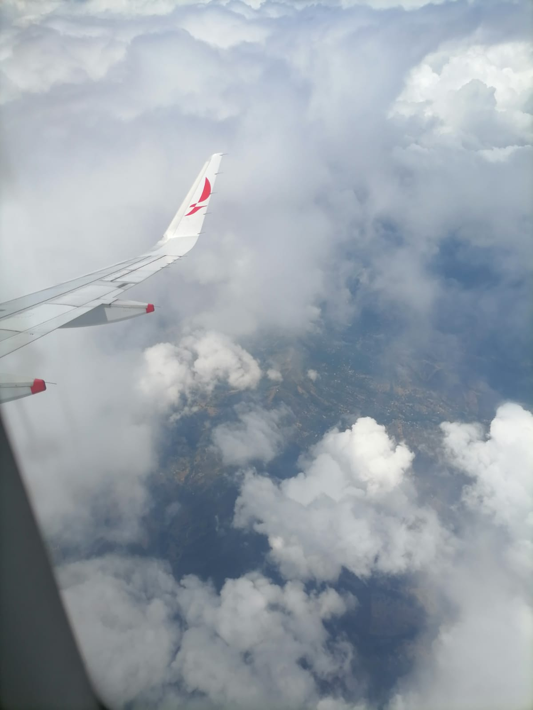

🛫 My Travel Experience
Last month, I had the opportunity to travel from my small town, Maito, to the wonderful city of Pereira. I took a flight and made a layover in Neiva before reaching my final destination. The journey was comfortable, and during the flight, I looked out of the window and admired the beautiful mountains of Colombia. When I finally landed in Pereira, I felt very excited and ready to explore the city and its culture.

📍 Where to Go
Pereira is full of amazing places to visit. One of the most popular attractions is the Matecaña Zoo, where you can see animals from Colombia and around the world. The Cathedral of Our Lady of Poverty, located in the city center, is another must-see place because of its architecture and cultural value. You can also enjoy a peaceful walk at Olaya Herrera Park, or visit the Ukumarí Biopark. Outside the city, the coffee farms offer beautiful landscapes and unique experiences.

🎯 What to Do
There are plenty of activities in Pereira and its surroundings. You can go hiking in Los Nevados National Park, which offers breathtaking views of snowy peaks. Coffee lovers can enjoy a coffee-tasting tour in the famous coffee region. Another great option is to explore the museums and squares of the city. And if you want to relax, you should visit the hot springs of Santa Rosa de Cabal, which are only 30 minutes away from Pereira.

💡 Travel Tips
When visiting Pereira, it is important to keep some tips in mind. The weather is usually warm, so wear light clothes, but bring a jacket for the evenings. Since you will walk a lot, it’s better to wear comfortable shoes. Always carry some Colombian pesos in cash for small expenses, and use local transportation such as buses or taxis. Finally, don’t forget to be respectful, enjoy the culture, and taste the delicious Colombian coffee!